- 00 开篇词 为什么说每个软件工程师都应该懂大数据技术？.md
- 01 大数据技术发展史：大数据的前世今生.md
- 02 大数据应用发展史：从搜索引擎到人工智能.md
- 03 大数据应用领域：数据驱动一切.md
- 04 移动计算比移动数据更划算.md
- 05 从RAID看垂直伸缩到水平伸缩的演化.md
- 06 新技术层出不穷，HDFS依然是存储的王者.md
- 07 为什么说MapReduce既是编程模型又是计算框架？.md
- 08 MapReduce如何让数据完成一次旅行？.md
- 09 为什么我们管Yarn叫作资源调度框架？.md
- 10 模块答疑：我们能从Hadoop学到什么？.md
- 11 Hive是如何让MapReduce实现SQL操作的？.md
- 12 我们并没有觉得MapReduce速度慢，直到Spark出现.md
- 13 同样的本质，为何Spark可以更高效？.md
- 14 BigTable的开源实现：HBase.md
- 15 流式计算的代表：Storm、Flink、Spark Streaming.md
- 16 ZooKeeper是如何保证数据一致性的？.md
- 17 模块答疑：这么多技术，到底都能用在什么场景里？.md
- 18 如何自己开发一个大数据SQL引擎？.md
- 19 Spark的性能优化案例分析（上）.md
- 20 Spark的性能优化案例分析（下）.md
- 21 从阿里内部产品看海量数据处理系统的设计（上）：Doris的立项.md
- 22 从阿里内部产品看海量数据处理系统的设计（下）：架构与创新.md
- 23 大数据基准测试可以带来什么好处？.md
- 24 从大数据性能测试工具Dew看如何快速开发大数据系统.md
- 25 模块答疑：我能从大厂的大数据开发实践中学到什么？.md
- 26 互联网产品 + 大数据产品 = 大数据平台.md
- 27 大数据从哪里来？.md
- 28 知名大厂如何搭建大数据平台？.md
- 29 盘点可供中小企业参考的商业大数据平台.md
- 30 当大数据遇上物联网.md
- 31 模块答疑：为什么大数据平台至关重要？.md
- 32 互联网运营数据指标与可视化监控.md
- 33 一个电商网站订单下降的数据分析案例.md
- 34 A_B测试与灰度发布必知必会.md
- 35 如何利用大数据成为“增长黑客”？.md
- 36 模块答疑：为什么说数据驱动运营？.md
- 37 如何对数据进行分类和预测？.md
- 38 如何发掘数据之间的关系？.md
- 39 如何预测用户的喜好？.md
- 40 机器学习的数学原理是什么？.md
- 41 从感知机到神经网络算法.md
- 42 模块答疑：软件工程师如何进入人工智能领域？.md
- 所有的不确定都是机会——智慧写给你的新年寄语.md
- 第2季回归丨大数据之后，让我们回归后端.md
- 结束语 未来的你，有无限可能.md
20 Spark的性能优化案例分析（下）
上一期，我讲了软件性能优化必须经过进行性能测试，并在了解软件架构和技术的基础上进行。今天，我们通过几个Spark性能优化的案例，看一看所讲的性能优化原则如何落地。如果你忘记了性能优化的原则，可以返回上一期复习一下。
基于软件性能优化原则和Spark的特点，Spark性能优化可以分解为下面几步。
1.性能测试，观察Spark性能特性和资源（CPU、Memory、Disk、Net）利用情况。
2.分析、寻找资源瓶颈。
3.分析系统架构、代码，发现资源利用关键所在，思考优化策略。
4.代码、架构、基础设施调优，优化、平衡资源利用。
5.性能测试，观察系统性能特性，是否达到优化目的，以及寻找下一个瓶颈点。
下面我们一起进入详细的案例分析，希望通过这几个案例，可以帮助你更好地理解Spark的原理，以及性能优化如何实践落地，希望能对你有所启发。
案例1：Spark任务文件初始化调优
首先进行性能测试，发现这个视频图谱N度级联关系应用分为5个job，最后一个job为保存结果到HDFS，其余job为同样计算过程的反复迭代。但是发现第一个job比其他job又多了个计算阶段stage，如图中红圈所示。
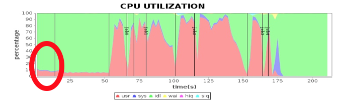
通过阅读程序代码，发现第一个job需要初始化一个空数组，从而产生了一个stage，但是这个stage在性能测试结果上显示，花费了14秒的时间，远远超出合理的预期范围。同时，发现这段时间网络通信也有一定开销，事实上只是内存数据初始化，代码上看不出需要进行网络通信的地方。下图是其中一台计算节点的通信开销，发现在第一个stage，写通信操作几乎没有，读通信操作大约每秒几十MB的传输速率。
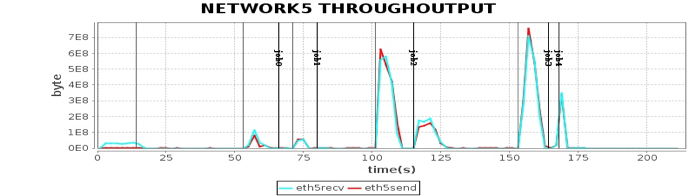
分析Spark运行日志，发现这个stage主要花费时间并不是处理应用的计算逻辑，而是在从Driver进程下载应用执行代码。前面说过，Spark和MapReduce都是通过移动计算程序到数据所在的服务器节点，从而节省数据传输的网络通信开销，并进行分布式计算，即移动计算比移动数据更划算，而移动计算程序就是在这个阶段进行。
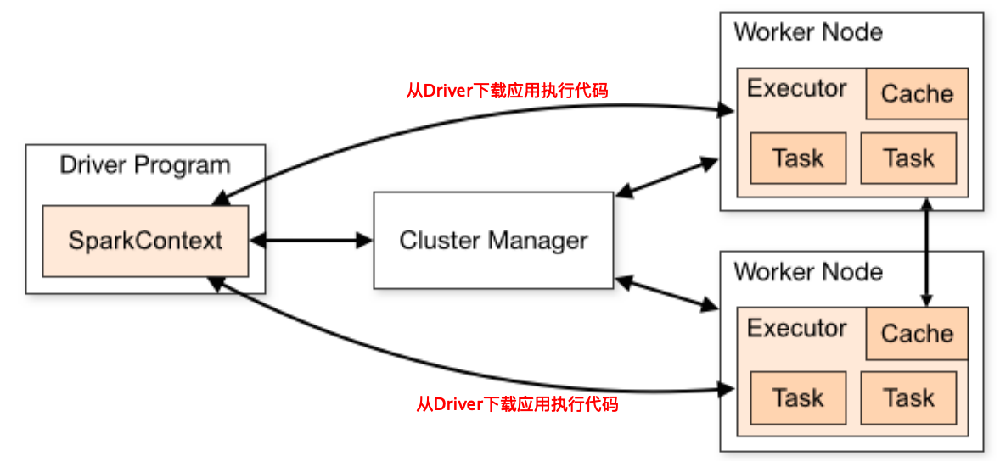
这个视频关系图谱计算程序因为依赖一个第三方的程序包，整个计算程序打包后大小超过17MB，这个17MB的JAR包需要部署到所有计算服务器上，即Worker节点上。但是只传输17MB的数据不可能花费这么多时间啊？
进一步分析Spark日志和代码后发现，每个计算节点上会启动多个Executor进程进行计算，而Spark的策略是每个Executor进程自己去下载应用程序JAR包，当时每台机器启动了30个Executor进程，这样就是4×30=120个进程下载，而Driver进程所在机器是一块千兆网卡，导致将这些数据传输完成花费了14秒的时间。
发现问题以后，解决办法就显而易见了。同一台服务器上的多个Executor进程不必每个都通过网络下载应用程序，只需要一个进程下载到本地后，其他进程将这个文件copy到自己的工作路径就可以了。
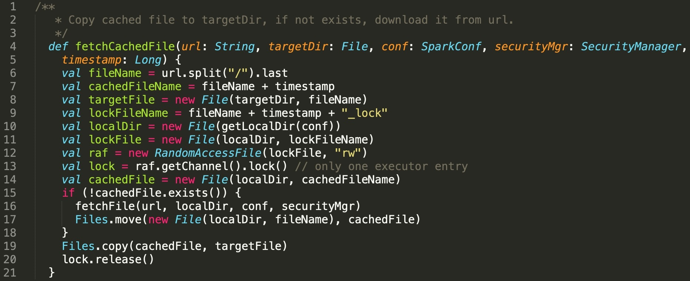
这段代码有个技术实现细节需要关注，就是多个进程同时去下载程序包的时候，如何保证只有一个进程去下载，而其他进程阻塞等待，也就是进程间的同步问题。
解决办法是使用了一个本地文件作为进程间同步的锁，只有获得文件锁的进程才去下载，其他进程得不到文件锁，就阻塞等待，阻塞结束后，检查本地程序文件是否已经生成。
这个优化实测效果良好，第一个stage从14秒下降到不足1秒，效果显著。
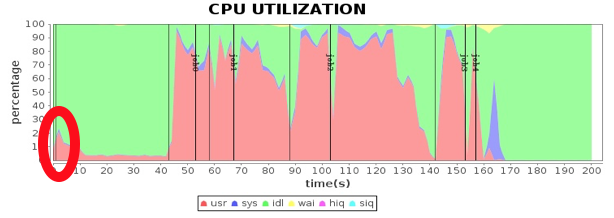
这个案例的具体代码你可以参考：- https://github.com/apache/spark/pull/1616
案例2：Spark任务调度优化
继续前面的性能测试，看看有没有新的性能瓶颈以及性能指标不合理的地方。我们将4台Worker机器的CPU使用率进行对比分析，发现CPU使用率有些蹊跷的地方。
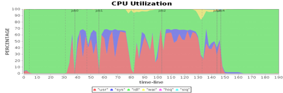
- -
-
 -
-

从图中看到，在第一个job的第二个阶段，第三台机器的CPU使用率和其他机器明显不同，也就是说计算资源利用不均衡，这种有忙有闲的资源分配方式通常会引起性能问题。
分析Spark运行日志和Spark源代码，发现当有空闲计算资源的Worker节点向Driver注册的时候，就会触发Spark的任务分配，分配的时候使用轮询方式，每个Worker都会轮流分配任务，保证任务分配均衡，每个服务器都能领到一部分任务。但是为什么实测的结果却是在第二个stage，只有一个Worker服务器领了任务，而其他服务器没有任何任务可以执行？
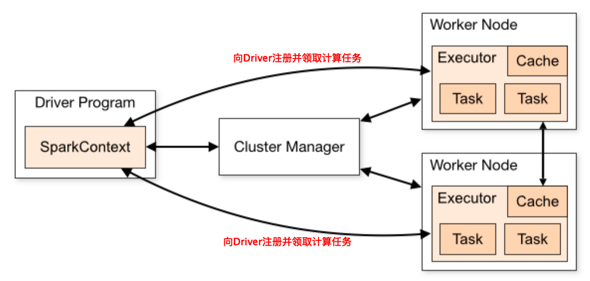
进一步分析日志，发现Worker节点向Driver注册有先有后，先注册的Worker开始领取任务，如果需要执行的任务数小于Worker提供的计算单元数，就会出现一个Worker领走所有任务的情况。
而第一个job的第二个stage刚好是这样的情况，demo数据量不大，按照HDFS默认的Block大小，只有17个Block，第二个stage就是加载这17个Block进行初始迭代计算，只需要17个计算任务就能完成，所以当第三台服务器先于其他三台服务器向Driver注册的时候，触发Driver的任务分配，领走了所有17个任务。
同时，为了避免这种一个Worker先注册先领走全部任务的情况，我们考虑的一个优化策略是增加一个配置项，只有注册的计算资源数达到一定比例才开始分配任务，默认值是0.8。
spark.scheduler.minRegisteredResourcesRatio = 0.8
为了避免注册计算资源达不到期望资源比例而无法开始分配任务，在启动任务执行时，又增加了一个配置项，也就是最小等待时间，超过最小等待时间（秒），不管是否达到注册比例，都开始分配任务。
spark.scheduler.maxRegisteredResourcesWaitingTime = 3
启用这两个配置项后，第二个stage的任务被均匀分配到4个Worker服务器上，执行时间缩短了1.32倍。而4台Worker服务器的CPU利用率也变得很均衡了。
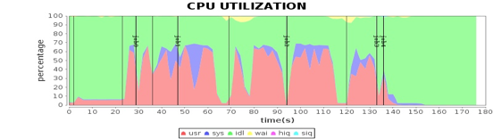
- -
-
 -
-

这个案例的具体代码你可以参考：https://github.com/apache/spark/pull/900- https://github.com/apache/spark/pull/1525
案例3：Spark应用配置优化
看案例2的几张CPU利用率的图，我们还发现所有4个Worker服务器的CPU利用率最大只能达到60%多一点。例如下图，绿色部分就是CPU空闲。
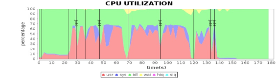
这种资源利用瓶颈的分析无需分析Spark日志和源代码，根据Spark的工作原理，稍加思考就可以发现，当时使用的这些服务器的CPU的核心数是48核，而应用配置的最大Executor数目是120，每台服务器30个任务，虽然30个任务在每个CPU核上都100%运行，但是总的CPU使用率仍只有60%多。
具体优化也很简单，设置应用启动参数的Executor数为48×4=192即可。
案例4：操作系统配置优化
在性能测试过程中发现，当使用不同服务器的时候，CPU资源利用情况也不同，某些服务器的CPU处于sys态，即系统态运行的占比非常高，如下图所示。
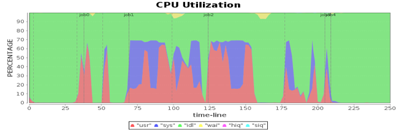
图中紫色为CPU处于sys态，某些时候sys态占了CPU总使用率的近80%，这个比例显然是不合理的，表示虽然CPU很忙，但是没有执行用户计算，而是在执行操作系统的计算。
那么，操作系统究竟在忙什么，占用了这么多CPU时间？通过跟踪Linux内核执行指令，发现这些sys态的执行指令和Linux的配置参数transparent huge pages有关。
当transparent huge pages打开的时候，sys态CPU消耗就会增加，而不同Linux版本的transparent huge pages默认是否打开是不同的，对于默认打开transparent huge pages的Linux执行下面的指令，关闭transparent huge pages。
echo never > /sys/kernel/mm/transparent_hugepage/enabled
echo never > /sys/kernel/mm/ transparent_hugepage/defrag
关闭以后，对比前面的CPU消耗，sys占比明显下降，总的应用耗时也有明显下降。
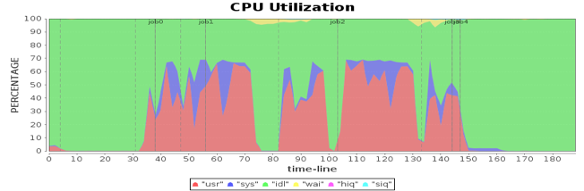
案例5：硬件优化
分析网卡的资源消耗，发现网络通信是性能的瓶颈，对整个应用的影响非常明显。比如在第二个、第三个job，网络通信消耗长达50秒的时间，网络读写通信都达到了网卡的最大吞吐能力，整个集群都在等待网络传输。
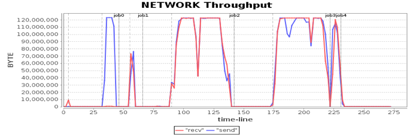
我们知道千兆网卡的最大传输速率是每秒125MB，这样的速率和CPU内存固然没法比，而虽然比单个磁盘快一些，但是服务器磁盘是8块磁盘组成的阵列，总的磁盘吞吐量依然碾压千兆网卡，因此网卡传输速率的瓶颈就成为整个系统的性能瓶颈。
而优化手段其实很简单粗暴，就是升级网卡使用万兆网卡。
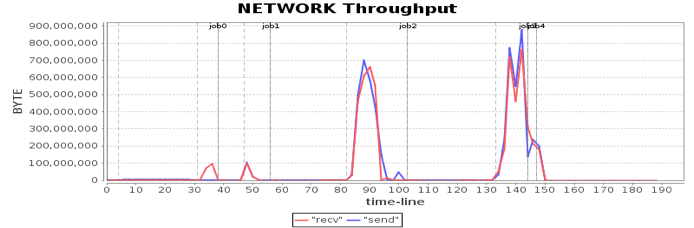
硬件优化的效果非常明显，以前需要50多秒的网络通信时间，缩短为10秒左右。从性能曲线上看，网络通信在刚刚触及网卡最大传输速率的时候，就完成了传输，总的计算时间缩短了近100秒。
小结
一般说来，大数据软件性能优化会涉及硬件、操作系统、大数据产品及其配置、应用程序开发和部署几个方面。当性能不能满足需求的时候，先看看各项性能指标是否合理，如果资源没有全面利用，那么可能是配置不合理或者大数据应用程序（包括SQL语句）需要优化；如果某项资源利用已经达到极限，那么就要具体来分析，是集群资源不足，需要增加新的硬件服务器，还是需要对某项硬件、操作系统或是JVM，甚至是对大数据产品源代码进行调优。
思考题
关于目前的主要大数据产品，你在学习、使用过程中，从SQL写法、应用编程、参数配置，到大数据产品自身的架构原理与源码实现，你有没有发现有哪些可以进行性能优化的地方？
欢迎你点击“请朋友读”，把今天的文章分享给好友。也欢迎你写下自己的思考或疑问，与我和其他同学一起讨论。
© 2019 - 2023 Liangliang Lee. Powered by gin and hexo-theme-book.